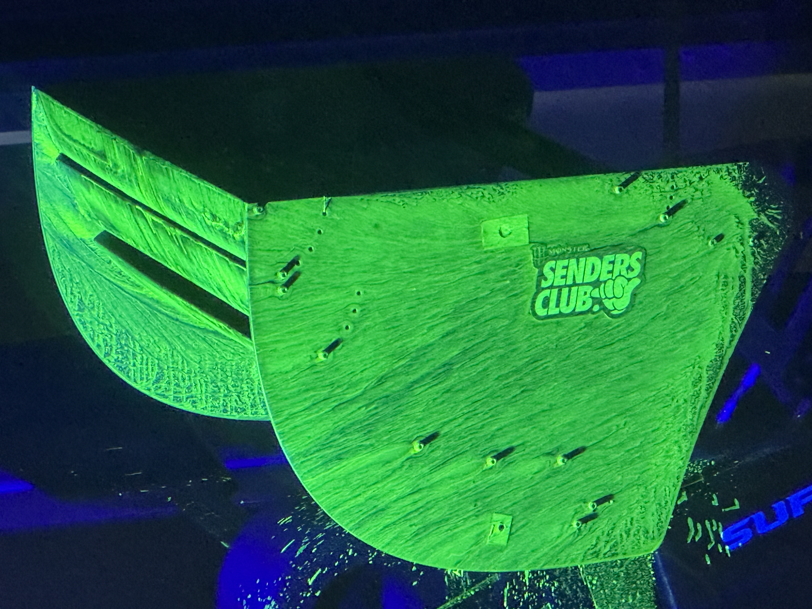

Wind-Tunnel Testing
- Supported the setup and operation of a 50% scale vehicle in the wind tunnel.
- Collected aerodynamic force data alongside surface pressure measurements and flow visualisation.
- Controlled test conditions to provide repeatable data for CFD comparison.

CFD Methodology
- Developed and refined the STAR-CCM+ vehicle model using mesh and domain convergence studies.
- Compared turbulence models to assess their influence on predicted aerodynamic forces and flow structures.
- Matched CFD boundary conditions and vehicle configuration to the experimental test case.

Flow Analysis
- Used pressure measurements and flow visualisation to investigate key aerodynamic features and regions of flow separation.
- Compared experimental observations against CFD pressure and velocity fields to assess whether the simulation reproduced the underlying flow behaviour.